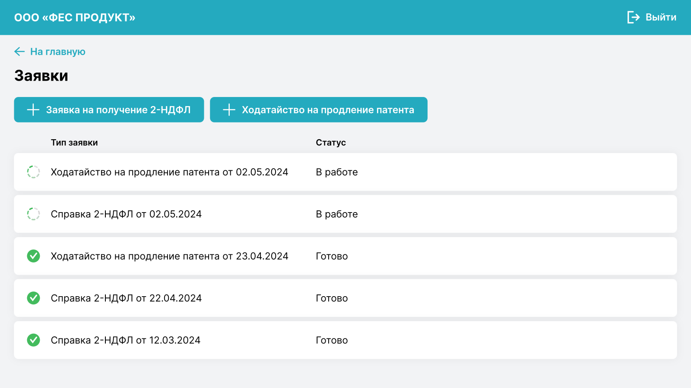
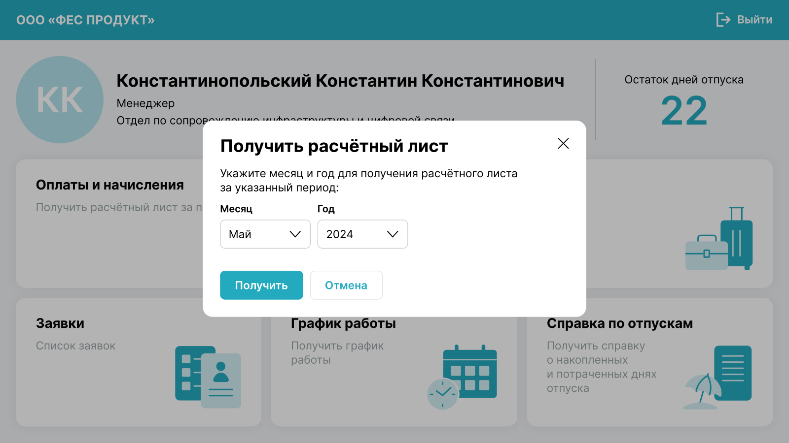

Портал ФЕС
Самообслуживание сотрудников завода: справки, заявки, начисления и графики через сенсорный терминал.
Контекст и задача
Сотрудники производственных линий тратили время на дорогу до отдела кадров и бухгалтерии, ожидание справок и уточнение графика. Спроектировала портал самообслуживания для сенсорных терминалов на территории завода: личные данные, начисления, графики и административные заявки.
Исследование
Провела интервью с 12 сотрудниками в возрасте от 30 до 60 лет. Разбирала последние обращения в административные службы: последовательность действий, время, затруднения, опыт работы с сенсорными экранами и ожидания от новой системы.
Сотрудникам важно быстро увидеть график и остаток отпуска, понять состав документов для заявки и её статус. Барьеры — непривычная навигация, страх ошибиться и необходимость покидать рабочее место.
Сопоставила потребности с возможностями 1С:ЗУП и изучила привычные сценарии повседневных терминалов. Фокус решения — частые задачи производственного персонала и короткое взаимодействие с экраном.
CJM и задачи пользователя
Разложила путь на регистрацию, главную страницу, подачу заявки, просмотр графика отпусков и получение готовой справки. Для каждого этапа описала мотивацию, действия, барьеры, точки контакта и эмоции.
- Быстро проверить остаток дней отпуска, чтобы запланировать отдых.
- Подать заявку с понятным набором полей и отслеживать её обработку.
- Запросить справку о доходах без личного визита в бухгалтерию.
- Вовремя продлить патент и не пропустить срок.
От выводов к интерфейсу
На главной — личная информация и входы в основные разделы. Заявки отделены от начислений и графиков, чтобы сотрудник сразу выбирал нужную задачу. В формах важны понятные подписи, минимум шагов и обратная связь о результате действия.





Дизайн для сенсорного терминала
Учитывала физический контекст: вертикальный экран диагональю 21 дюйм на стене, взаимодействие стоя и ограниченное время между рабочими задачами. Важные действия размещала в доступной зоне, учитывала размер пальцев, расстояние до экрана и то, что рука может перекрывать контент.
Выбирала заметные элементы управления и контрастные сочетания с учётом цветопередачи терминалов. Центральная композиция помогает находить действия без длительного изучения экрана.
Гипотезы дальнейшего развития
Сформулировала гипотезы о прямом доступе к данным с главной, сокращении шагов подачи заявки, подсказках для новичков, уведомлениях, поиске и мобильном доступе.
Для проверки предусмотрела время выполнения задачи, успешность с первого раза, долю самостоятельных обращений и заявок через портал, количество вопросов в поддержку и удовлетворённость сотрудников.